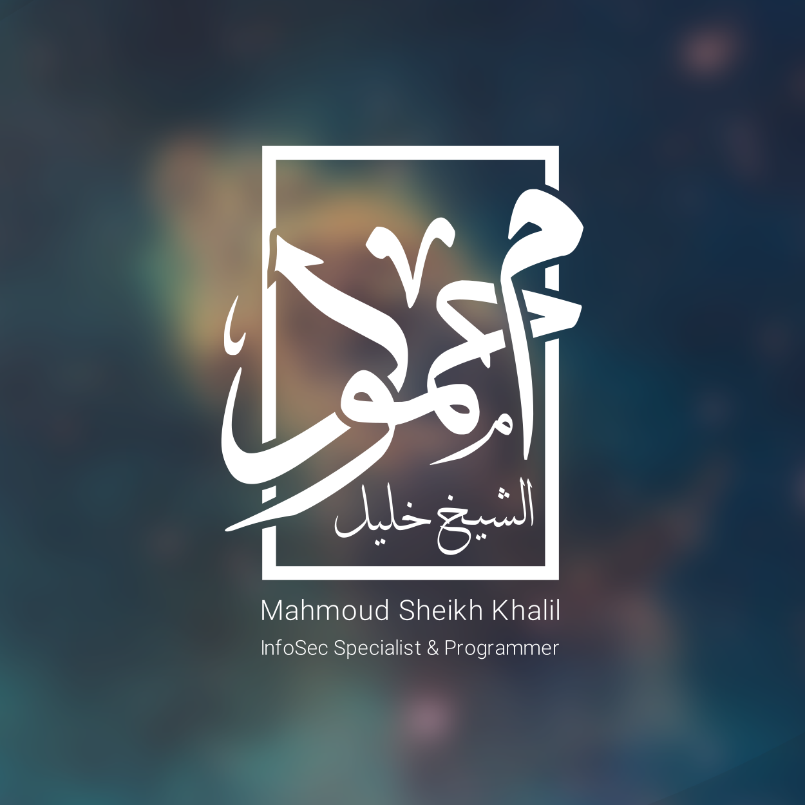

"توزيعة Arch Linux هي لوحةً فارغة أنت من ستقوم برسمها"
"الدنيا هم من لا هم له، اللهم لا هم إلا الآخرة."
أنا مهندس حاسوب متخصص في أمن المعلومات مع سنوات من الخبرة في تطوير البرمجيات وإدارة قواعد البيانات والسيرفرات. تخرجت بدرجة بكالوريوس في هندسة أمن المعلومات بتقدير جيد جداً من الكلية الجامعية للعلوم التطبيقية في غزة.
🐧 بالمناسبة، أستخدم Arch Linux كنظام تشغيل أساسي.أستمتع بتخصيص بيئة العمل لأقصى حد. 😊 أنا مهتم بتعلم المهارات الجديدة باستمرار، وأعتقد أن الفضول هو المحرك الحقيقي للتطور في مجال التكنولوجيا. ⚡ أحب البرمجة، خاصة على بيئة Linux، حيث أجد حرية ومرونة لا تضاهى في تحويل الأفكار إلى واقع.
أمتلك خبرة عملية واسعة في إدارة قواعد البيانات (Oracle, MySQL, SQL Server)، وإدارة سيرفرات Windows وLinux، وتطوير البرمجيات بلغات متعددة (Java, Python, C#). كما أمتلك قناة يوتيوب تعليمية (@cyber.khalil) أشارك فيها معرفتي التقنية مع أكثر من 1.7 ألف مشترك.
سبتمبر 2017 - يونيو 2021
الكلية الجامعية للعلوم التطبيقية (UCAS)
معدل 89.23% | 174 ساعة
سبتمبر 2021 - الحاضر
الكلية الجامعية للعلوم التطبيقية
5 مساقات | +200 طالب
فبراير 2022 - يوليو 2022
شركة غزة لايف باور
إدارة البنية التحتية للشبكات والمواقع
مايو 2019 - ديسمبر 2019
روضة الإبداع
تطوير حلول برمجية متكاملة لإدارة بيانات الروضة، وتصميم نظام متكامل يدعم تصدير واستيراد بيانات Excel
عرض المشروع على GitHubمارس 2019
Database Programming with PL/SQL
أكتوبر 2016 - نوفمبر 2016
VISION Plus
50 ساعة تدريبية
مارس 2018
مسابقة برمجية عالمية
فبراير 2018
سبتمبر 2018
فبراير 2017
سبتمبر 2017
الكلية الجامعية للعلوم التطبيقية
تدريس مساقات أنظمة التشغيل، برمجة Java، الشبكات، مقدمة في الحوسبة، وأخلاقيات الحاسوب
شركة غزة لايف باور
إدارة البنية التحتية للشبكات والمواقع الإلكترونية للشركة، وصيانة السيرفرات، وضمان استمرارية الخدمات التقنية
الكلية الجامعية للعلوم التطبيقية (UCAS)
التقدير: جيد جدًا (ممتاز) - المعدل: 89.23%
إجمالي الساعات: 174 ساعة | ساعات التطوع: 140 ساعة
روضة الإبداع
تطوير حلول برمجية متكاملة لإدارة بيانات الروضة، وتصميم نظام متكامل يدعم تصدير واستيراد بيانات Excel
مسابقة برمجية عالمية
شاركت في مسابقة Hash Code السنوية التي تنظمها Google
الكلية الجامعية للعلوم التطبيقية
تم تكريمي كواحد من أفضل الطلاب للفصل الدراسي
الكلية الجامعية للعلوم التطبيقية
تم تكريمي كواحد من أفضل الطلاب للفصل الدراسي
الكلية الجامعية للعلوم التطبيقية (UCAS)
بداية الدراسة الجامعية
الكلية الجامعية للعلوم التطبيقية
تم تكريمي كواحد من أفضل الطلاب للفصل الدراسي
الكلية الجامعية للعلوم التطبيقية
تم تكريمي كواحد من أفضل الطلاب للفصل الدراسي
VISION Plus
عدد الساعات: 50 ساعة
تاريخ الإنجاز: 26 نوفمبر 2016
UCAS | سبتمبر 2021 - الحاضر
تدريس مساقات أنظمة التشغيل، برمجة Java، الشبكات، مقدمة في الحوسبة، وأخلاقيات الحاسوب في الكلية الجامعية للعلوم التطبيقية.
شركة غزة لايف باور | فبراير 2022 - يوليو 2022
إدارة البنية التحتية للشبكات والمواقع الإلكترونية للشركة، وصيانة السيرفرات، وضمان استمرارية الخدمات التقنية.
روضة الإبداع | مايو 2019 - ديسمبر 2019
تطوير حلول برمجية متكاملة لإدارة بيانات الروضة، وتصميم نظام متكامل يدعم تصدير واستيراد بيانات Excel.
Oracle PL/SQL
تصميم وإدارة قاعدة بيانات جامعية متكاملة باستخدام Oracle DBMS تدعم إدارة الطلاب والمدرسين والموظفين.
PowerShell
سكربتات PowerShell لأتمتة إعداد Active Directory وخدمات Windows Server (DNS, DHCP, File Sharing).
Java + Oracle
تطبيق Java مع واجهة مستخدم لإدارة قاعدة بيانات Oracle، مع دعم إجراءات PL/SQL والمشغلات.
مدة الفيديو: 13:28 | المشاهدات: 5,174
مدة الفيديو: 13:45 | المشاهدات: 4,021
مدة الفيديو: 15:45 | المشاهدات: 3,401
khalil2535@proton.me
+970 597 980 398
غزة - فلسطين
يمكنك إرسال رسالة مباشرة إلى حسابي على Telegram. اضغط على الزر أدناه لبدء المحادثة.
سيتم فتح تطبيق Telegram أو الموقع الرسمي. تأكد من تثبيت Telegram على جهازك.